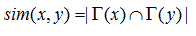
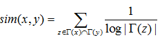
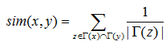
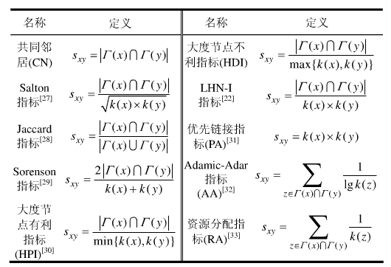
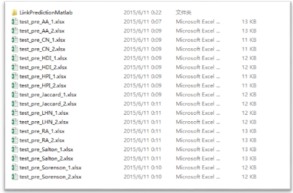
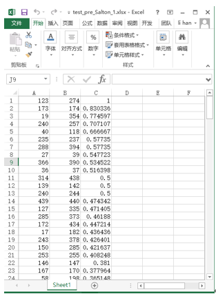
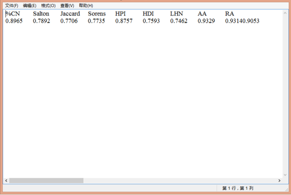

可靠的链路预测算法的正确率比较评价指标
研究背景
链接预测
链接预测主要有两类研究内容：第一类是预测现阶段存在但是没有被发现的链接，第二个类是预测现阶段不存在但是未来会存在的链接。
对于链接预测的研究国内外学者提出了很多种算法，一些学者提出了基于节点相似性的链接预测算法，认为两个节点的相似性越大，其发生链接的可能性越大。基于节点相似性的计算可以分为基于节点邻居和基于路径两种类型。关于基于节点邻居类型，通过计算两个节点的共同邻居数目确定节点相似性。
链接预测算法原理
将社会网络表示成一个无向图模型 ，其中V为图G中节点的集合，E为边的集合。对于图G中的每一对节点x和y，如果x和y之间没有一条边相连接，那么就要用链接预测算法计算该两个节点的相似性，节点相似性值的范围为0到正无穷大，两个节点的相似性越大，表示两个节点之间存在链接的可能性越大。基于节点相似性的链接预测算法通过计算节点相似性判断两个节点存在链接的可能性，然后将节点相似性的值进行从大到小排序。
在实验的过程中，将现有社会网络的链接集合E分为训练边集合Et和测试边集合Ep 两个部分，将链接E中90% 的边标记为训练边，剩余10% 的边标记为测试边。为了对链接预测算法的效果进行评价。
一个协同过滤算法的基本方法是对大批用户进行搜索，从中找出兴趣相似的用户群。算法会对这些人的所偏爱的内容进行考察，然后构造出推荐列表，推荐给该群体的用户。
传统 AUC统计值预测正确率
实验一共进行N次比较，在比较中，如果有m次测试边分数值大于不存在边的分数值，n次两个分数值相等，则AUC定义为 。
AUC值的大小可衡量算法的准确程度，AUC值越大，算法准确程度越高。
链接预测步骤
数据集分割
首先对数据集进行分割，可以把数据集分成训练集和测试集。然后把把训练集里对应的节点之间的边去掉，然后预测其存在的概率。删边是选择已在训练集里的出现过的节点来操作，删除的边可以占总边数的10%代码中也可以实现改变分割比例。
相关节点之间相似度的度量
- CN Algorithm
该算法的设计基于一个直观的假设，即两个节点的共同邻居节点数目越多，它们的相似度越大。具体的计算公式为

式中， 表示节点x的邻居节点集合， 表示节点y的邻居节点集合, 表示节点x和节点y的相似性。
- AA Algorithm
该算法先计算两个节点的共同邻居集合，在集合中计算每个元素节点度数的对数值倒数，然后将所有的值进行相加。具体的计算公式为

式中， 分别表示节点x和节点y的共同邻居节点集合，z表示的集合中的任何一个元素， 表示节点z的邻居集合。
- RA Algorithm
该算法先计算每一个ｘ和ｙ的共同邻居节点的度数，接着计算它们的倒数，最后将这些值进行相加计算。具体计算公式为

不难看出，RA算法与Adamic-Adar算法比较相似，它们的区别是把 换成了 。
- Other Similarity Indicators（其他相似性指标）

基于局部结构-共同邻居的连接关系计算
分别应用下述几种相似度测量方法计算出各节点之间的连接关系
- CN算法
- Salton算法
- Jaccard算法
- Sorenson算法
- HPI算法
- HDI算法
- LHN算法
- AA算法
- RA算法
新正确率比较评价指标
Accuracy Score (AS)
在本测试数据集下，测试正确率，比传统的AUC统计值简单，可行。
Accuracy Score 评价指标分析各算法的正确率
基于此划分评估所有算法的正确率重复前面两个过程N次，并取平均值和方差
测试数据集
Celegans
测试结果及分析
各边预测值
将链接之间的存在的边的预测值写入EXCEL表格，其中因为为了得到更为精确的正确率AS，执行了两次循环，所以有两次的预测值，并且预测值是按照从大到小的顺序排列
举例：Salton算法存在的边的预测值

正确率值(AS)

各个算法的正确率得分(AS)计算结果
... Link updating
Feedback and Suggestions
Thanks for reading.